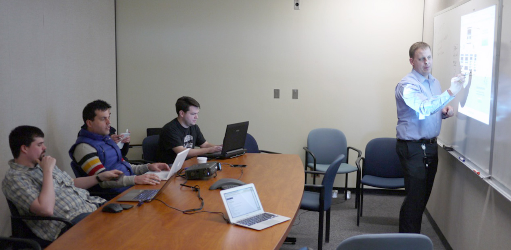
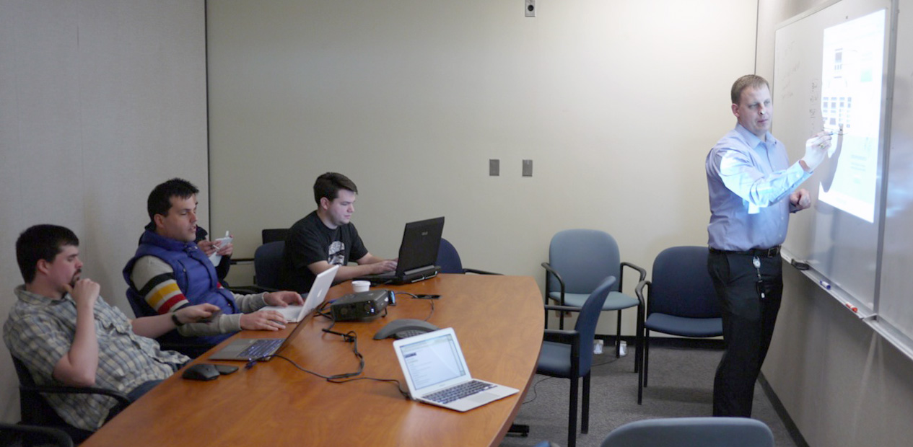
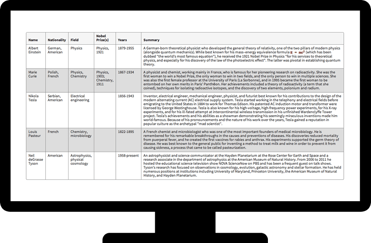
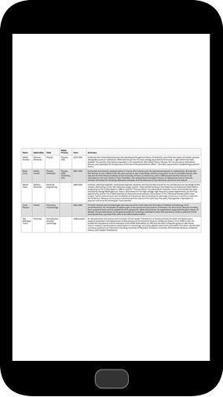

ITS Helped Us Collaborate

Put a Bunch of Smart People in a Room
 Above, from left to right: smart people in a room
Above, from left to right: smart people in a room
Put a Bunch of Smart People in a Room
Below: stuff getting done


Typical Development Process

Typical Development Process

Lack of Collaboration

What's the Alternative?
How do we avoid reinventing the wheel?
What makes the web great?
The Web is a Series of Tubes Components
Let's create some reusable components.
Future-Friendly Websites
What device will you be unwrapping tomorrow?
What device will you be unwrapping two holidays from now?

Responsive Design Can Be Hard
It takes a lot of time
It's fundamentally different
It's a moving target
Don't reinvent the wheel again
Is There Anybody Out There?

Foundation

Foundation
Mobile First
Semantic Markup
Library of JaveScript Plugins
“The most advanced responsive- Zurb, creators of Foundation (naturally)
front-end framework in the world.”
So We Started Making Stuff
Navigation
Responsive Grid
Responsive Tables

Responsive Tables

“Thats sounds terrific and everything, but how can I possibly use these super amazing, technologically advanced components on MY sites and apps?”
The New Web Framework
Is Responsive
Is Modern
Is Whimsically Magically Magnificent
Built for New York State


 Photo credit:
Photo credit:  Photo credit:
Photo credit: 


Thanks for Listening
Luke Charde
Department of Labor
Department of Labor
Craig Patik
Department of Taxation & Finance
Department of Taxation & Finance
Eric Steinborn
Division of Criminal Justice Services
Division of Criminal Justice Services